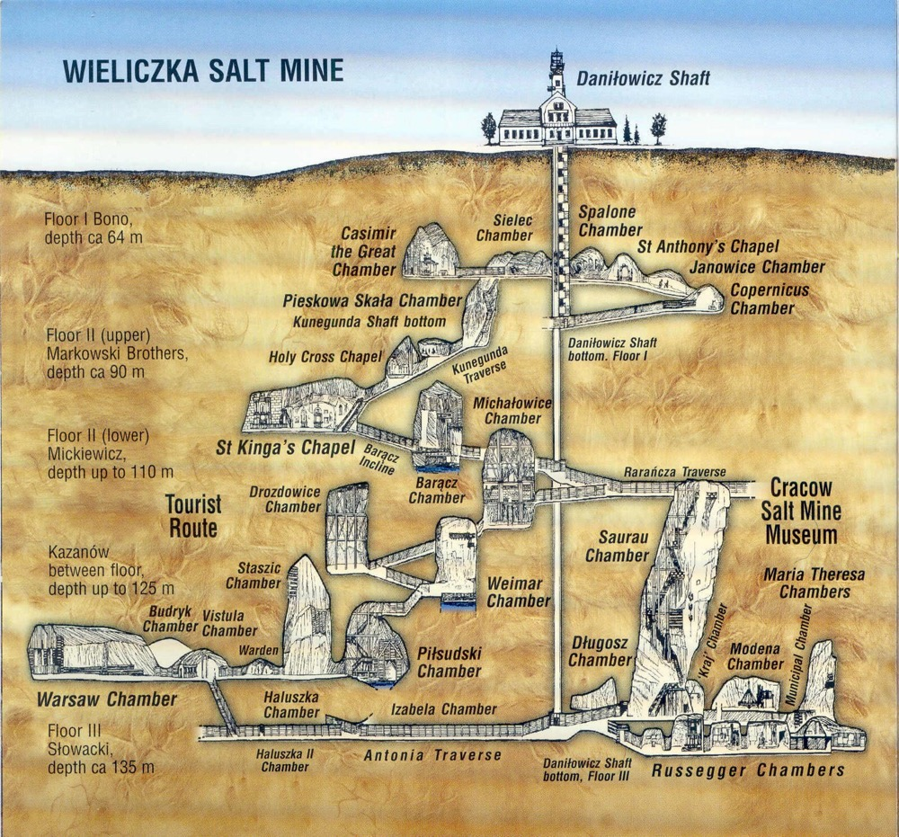
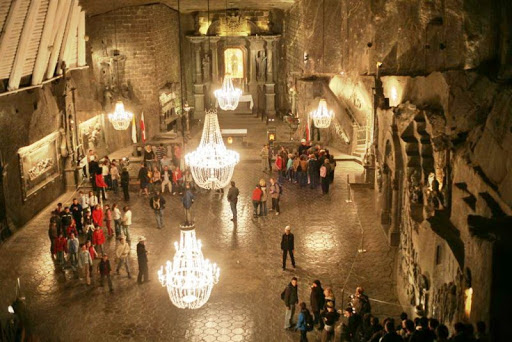
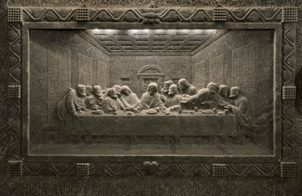
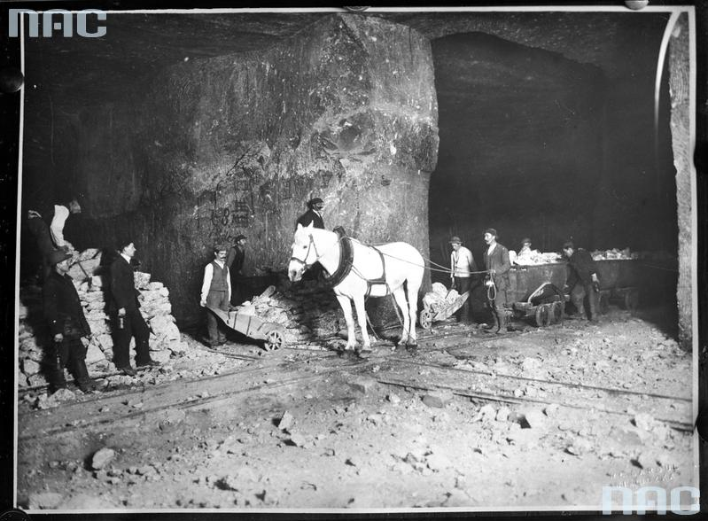

Соляная шахта «Величка»
Подземный город из соли
Миллионы лет назад на месте шахт было море. Потом море высохло, оставив после себя миллионы тонн соли. Именно эту соль и добывали здесь промышленным способом более 800 лет.
Своими масштабами потрясают:
- Подземные камеры и огромные залы, соединенные длинными переходами, украшенные скульптурами и барельефами из соли
- Подземные озёра
- Уникальные часовни
Это интереснейшая история древнего и опасного промысла - добычи соли.
Схематическое изображение первых трех уровней соляной шахты для экскурсий
Меня впечатлили
- Масштабы
- подземный город на девяти уровнях
- выроботка общей диной около 300 километров
- глубина до 327 метров
- Небольшие по своей глубине гравюры, которые визуально кажуться объемными
- Часовня Св. Кинги, созданная в 1896 году и действующая до сих пор
- Лошади, которые всю свою жизнь провели под землей. Последняя рабочая лошадь покинула шахту в 2004 году и получила назначенную ей пенсию. В шахте лошадь проработала 13 лет, а потом на пенсии прожила еще 9.
- Экскурсовод, который сумел передать особую атмосферу



Моя фотография в шахте